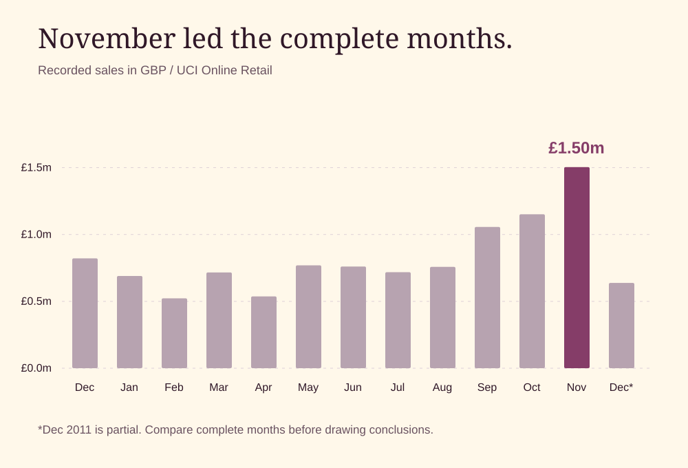

Ecommerce analytics / Portfolio case studyWhat sold, and what
What sold, and what
needs checking?
A review of 541,909 records found that one credit accounted for 82.1% of December’s credit value. The output includes a sales dashboard and a list of transactions to investigate.
- Source records
- 541,909
- Markets
- 38
- Excel sheets
- 10
Online retail performance

From source data to a usable view.View project